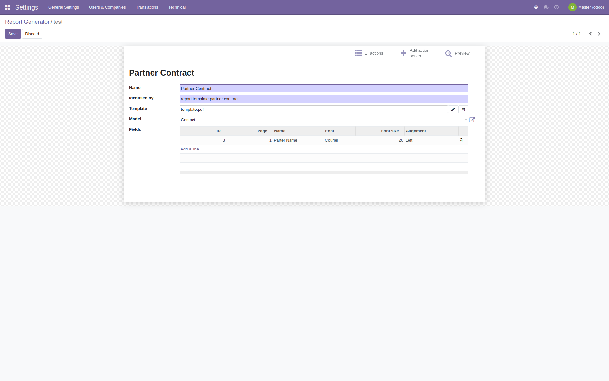
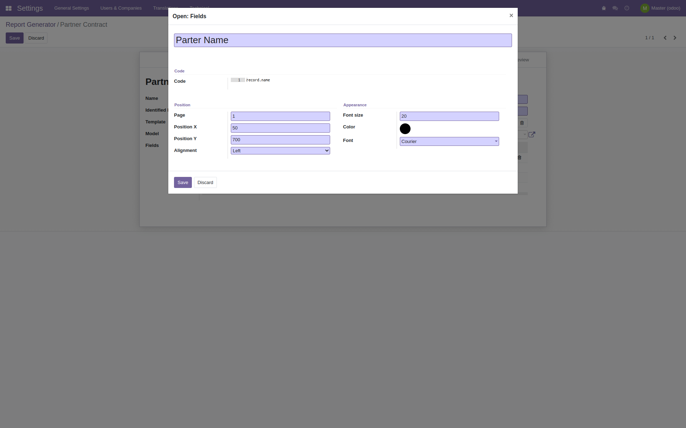
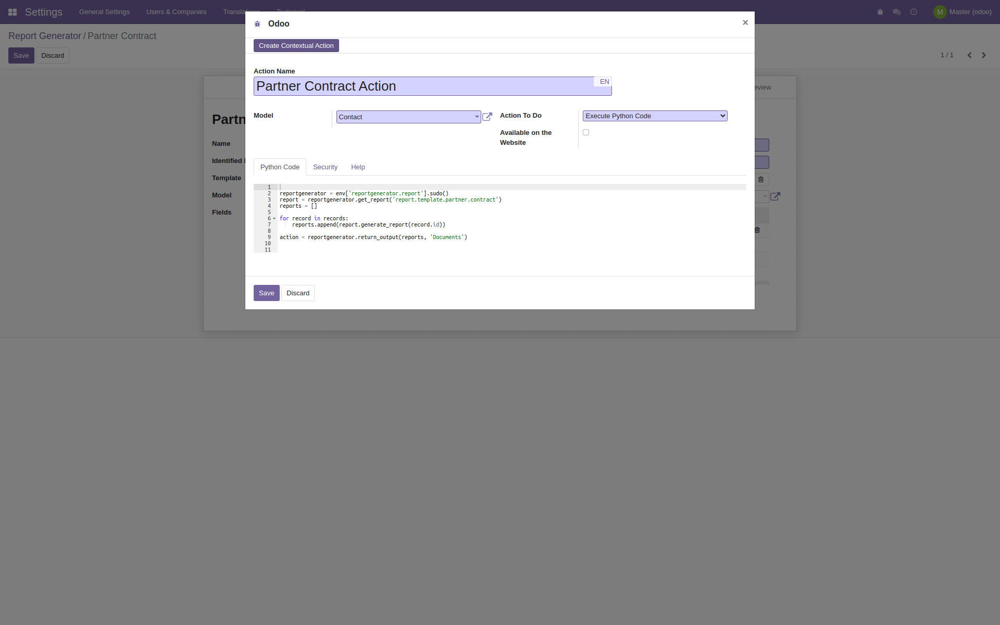
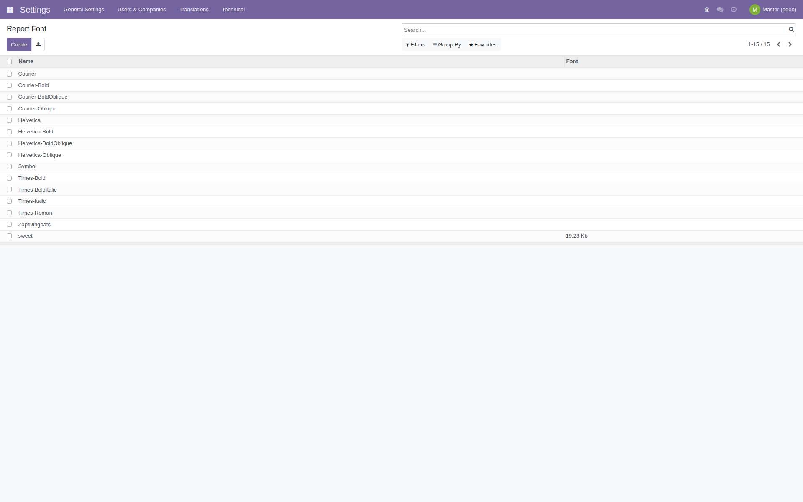
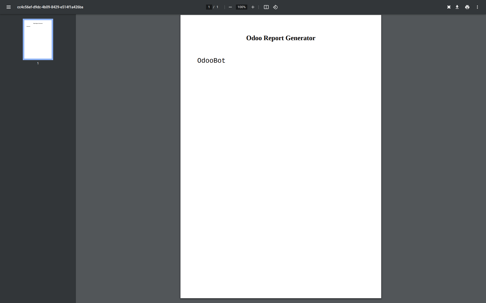

<div class="container">
    <div class="oe_styling_v8">
        <h2>Description</h2>
        <p>This module allows to generate PDF reports based on your models without using <code>QWeb</code> or <code>wkhtmltopdf</code>.</p>

        <h2>Usage</h2>
        <p>
            Once you finished your installation, you must create your first template.<br />
            Access <code>Settings -> Technical Features -> Actions -> Report Generator</code><br />
            Set up your template by providing a name, a code reference (for eg. <i>report.template.partner.contract</i>)<br />
            Provide a starting PDF template and choose your reference model where <b>Report Generator</b> will fetch data dynamically.<br />
        </p>
        <div style="background-color:#999; display:inline-block">
            
        </div>

        <br /><br />

        <h2>Labels</h2>
        <p>
            Set up your customizations providing <b>X, Y</b> coordinates for each label and finish styling them changing colours, font families and font sizes.<br />
            <code>code</code> field will be the processed value being printed in your report at your coordinates.<br />
            It is a <b>Python</b> field, you can use strings, functions or a record instance using <code>record</code>.<br />
        </p>
        <div style="background-color:#999; display:inline-block">
            
        </div>

        <br /><br />

        <h2>Server Actions</h2>
        <p>
            <b>Report Generator</b> creates server actions for you to guarantee a completely no-code experience.<br />
            This does not means you won't be able to use your reports in your custom modules.<br />
            Don't forget to press <b>Create Contextual Action</b> to make it visible in your model actions.
        </p>
        <div style="background-color:#999; display:inline-block">
            
        </div>

        <br /><br />

        <h2>Customizable Fonts</h2>
        <p>
            This module automatically imports system and pip ttf fonts.<br />
            You can also import your custom <b>.TTF</b> files in <code>Settings -> Technical Features -> Actions -> Report Font</code>

        </p>

        <div style="background-color:#999; display:inline-block">
            
        </div>

        <br /><br />

        <h2>Integration</h2>
        <p>
            If you wish to integrate <b>Report Generator</b> in your custom modules, you can use <code>generate_report</code> method.<br />
            All you need is your report identifier referience, <i>for eg. report.template.partner.contract</i>.
            <code>self.env['reportgenerator.report'].get_report('report.template.partner.contract').generate_report(record.id)</code><br /><br />
            A base64 encoded string pdf will be returned.

        </p>

        <h2>Final Output</h2>
        <p>
            <div style="background-color:#999; display:inline-block">
                
            </div>
        </p>

        <hr>
        <h4 style="color:green">You're done!</h4>
        <p>If you encounter any problem with this module please contact us on the following email address: alessandro@gessa.net.</p>
        <br>
    </div>
</div>